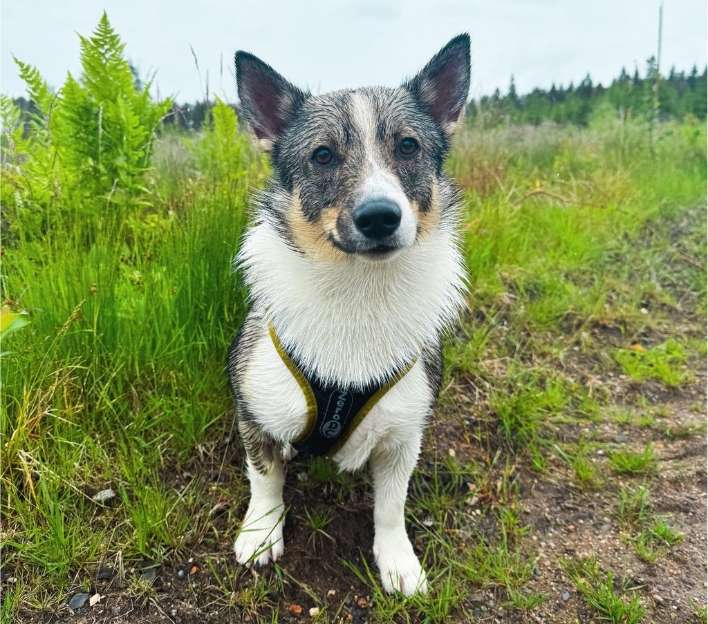
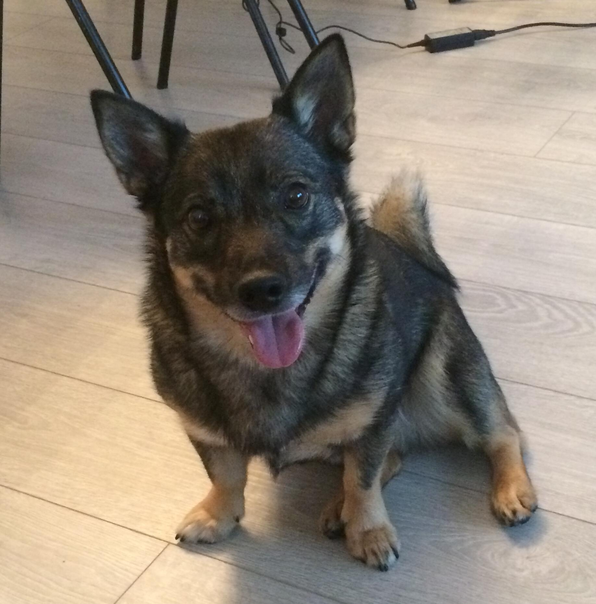

Kennel Kipinätassun
Kennel KipinätassunKoiramme

Ruuti s. 20.7.2022
Terveystulokset:
Lonkat A/A
Kyynärnivelen inkongruenssi 0/0
Polvet 0/0
LTV0, SP0, IDD0
Ei todettu perinnöllisiä silmäsairauksia
Ruuti on hyvin tyypillinen göötti: suuri koira pienessä paketissa. Ruutin kanssa harrastetaan noseworkia ja hoopersia. Ruuti on Kipinätassun A-pentueen emä.
Ruuti on arjessa varsin mutkaton koira: se on innoissaan osallistumassa yhteiseen tekemiseen sellaista tarjoattaessa, mutta osaa rauhoittua lepäämään, kun mitään ei tapahdu. Ruuti on helppo ottaa mukaan minne tahansa eikä sillä ei ole ääni- tai alusta-arkuuksia. Ruuti tulee hyvin toimeen muiden koirien kanssa, vaikka se ei enää intoudukaan kovin paljoa leikkimään.
Ruuti on kuvattu luustoltaan terveeksi 2-vuotiaana. Ruutilla ei ole ollut terveyshaasteita: se on hyvävatsainen eikä sillä ole ruoka-aineyliherkkyyksiä. Myöskään mitään iho-oireita sillä ei ole ollut. Hammashoidossa Ruuti käy vuosittain, mutta hammaskiven lisäksi mitään huomautettavaa ei ole ollut.

Tyyne s. 16.8.2020
Terveystulokset:
Lonkat B/A
Kyynärnivelen inkongruenssi 0/0
Polvet 0/0
LTV1, SP0, IDD0
Ei todettu perinnöllisiä silmäsairauksia
Tyynen kohdalla ei voida sanoa, että nimi olisi ollut enne: tässä koirassa on tulta ja tappuraa! Siitä huolimatta Tyyne on myös kaikkien kaveri ja se rakastaa kaikkia ja kaikkea. Valitettavasti Tyyneä ei voitu käyttää jalostukseen, sillä Tyyne jouduttiin steriloimaan kaksivuotiaana märkäkohdun vuoksi eikä sen luonnekaan välttämättä olisi paras mahdollinen jalostuskoiralle ollutkaan.
Kuten todettu, Tyyne on melko täpäkkä tapaus. Kärsivällisyys ei ole sen paras luonteenpiirre ja turhautuessaan se saattaa jonkin verran haukkua. Tyynellä ei ole alusta-arkuuksia, mutta kovia ja äkillisiä ääniä se saattaa hieman jännittää.